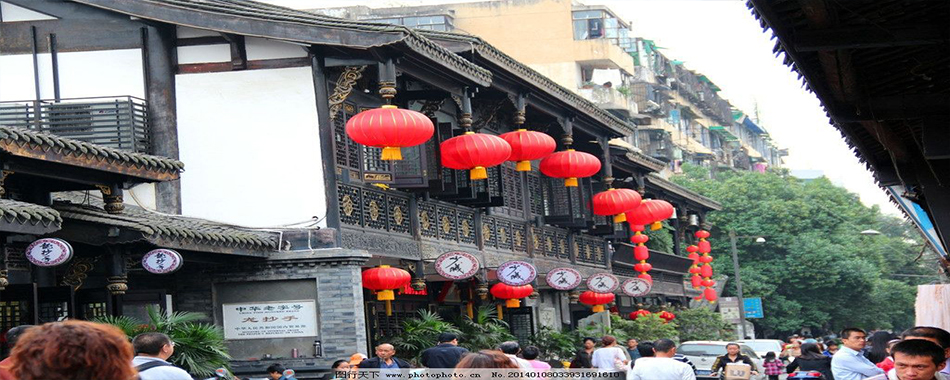
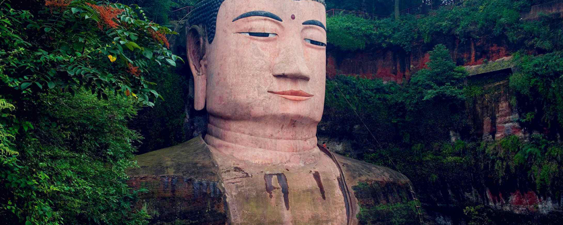

-

- 
- 
著名的古代水利工程都江堰，位于四川都江堰市城西，古时属都安县境而名为都安堰，宋元后称都江被誉为“独奇千古”的“镇川之宝” 。两千年前，李冰父子面对桀骜不驯的岷江水，火攻玉垒化为离堆。鱼嘴堤分水、飞沙堰溢洪、宝瓶口引水，将逢雨必涝的西蜀平原，化作了水旱从人，不知饥馑的天府之国。这项工程直到今天还在发挥着作用，被称为“活的水利博物馆”。是全世界至今为止年代最久、唯一留存、以无坝引水为特征的宏大水利工程。
一千八百多年前，道教创始人张陵看中了青城山的碧绿清幽，决定在此修炼道法。青城山的香火愈来愈盛，但道家修建的观宇与亭阁始终深藏于密林之间，与四周的山林岩泉融为一体。
独特的地理条件和生态环境造就了离堆锁峡、金堤夕照、雄关古道、玉垒仙都、寒潭伏龙、笮桥飞虹、玉女仙姿、岷山晓雪、宝瓶春晓等自然景观，与二王庙、伏龙观、安澜索桥、城隍庙等古代建筑交相辉映，形成了山、水、城、林、堰、桥融为一体的独特风光，成为自然与文化、人类与环境、水利工程与山水风光和谐融合、天人合一的千古奇观。具有极强的观赏性、生态性、特色性。